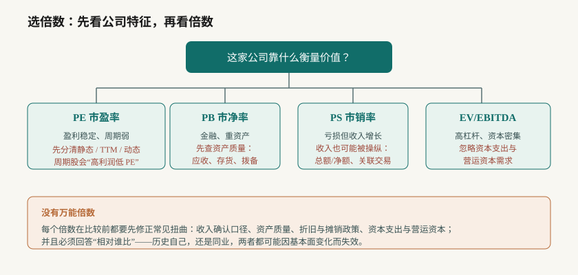
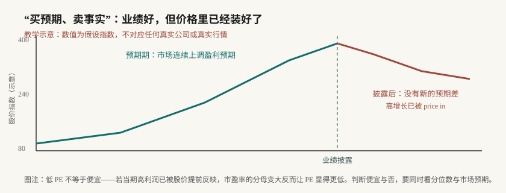

相对估值法：市盈率背后的市场预期
相对估值法用一个可比对象的倍数给自己定价。它比 DCF 少一些假设，代之以一个隐含前提：参照对象是被合理定价的。倍数选错、口径混用或忽略预期，都会让结论失真。
相对估值法在做什么
相对估值法不回答“这家公司本身值多少”，而是回答“如果参照对象的价格是对的，这家公司按同样的倍数应该值多少”。它用一个倍数的分子（价格或企业价值）除分母（利润、净资产、收入等），再把这个倍数应用到目标公司。
它比 DCF 少一些显式假设，但代价是把主角换成了参照对象：你隐含地假设可比公司是被合理定价的，而且两者真的可比。一旦可比组选错，或者市场整体处于极值，结论就会系统性偏离。
纠正两个常见误解：一是“DCF 更正确、相对估值只是权宜之计”——两者都是工具，DCF 的假设不可验证，相对估值则把假设隐藏在了可比对象里，谈不上谁更“准”。二是“相对估值更简单所以更可靠”——倍数计算确实简单，但“选谁作参照、用哪个口径、要不要修正”每一步都可能错。
因此本页的重点不是背公式，而是把每个倍数的分母弄准、把最容易出错的场景标出来，并学会用分位数而不是单个数来判断“贵不贵”。
PE 的三种口径与误用
市盈率 PE = 市值 ÷ 归属母公司净利润（或 股价 ÷ 每股收益）。它隐含“利润不变时多少年回本”，但这个含义只在利润可持续时才成立。按分母取哪一期利润，PE 至少有三类：
| 口径 | 分母 | 优点 | 最容易被误用之处 |
|---|---|---|---|
| 静态 PE（LYR） | 上一完整年度利润 | 数据已审计、确定 | 已过时；周期股上一年高利润会压低 PE |
| TTM PE | 最近连续四个季度的利润 | 无需预测、滚动更新 | 季报未经审计；含季节性需同口径对比 |
| 动态 PE（Forward） | 未来一年预测利润 | 前瞻性强 | 分母是预测值，不同机构不一致，容易“自证便宜” |
分母还需额外确认：用归母净利润还是扣非归母净利润（扣除一次性损益）？用基本每股收益还是摊薄？不声明口径的 PE 无法比较。
三类最典型的失真场景：周期股在盈利高点时 PE 最低，恰是最危险的时候；亏损公司 PE 为负或无意义；金融股由于高杠杆经营，PE 天然偏低，不能与其他行业直接比（详见第 21 章）。

PB 与 PS 的修正项
PB 市净率：先把净资产分清
PB = 市值 ÷ 归母净资产。常见说法是“PB 回答破产时每股能分多少”，这是不准确的：账面净资产不等于清算价值。净资产里可能包含商誉、递延所得税资产等难以变现的项目，而清算时资产常要折价、负债可能超预期。
- 破净（PB < 1）不等于便宜。它可能反映市场担忧资产水分（应收、存货、商誉减值）或持续亏损会侵蚀净资产。
- 银行股要先把拨备放进去看。不良贷款若需补提拨备，会直接减少净资产，账面 PB 会变大；因此银行的低 PB 需要结合不良率、拨备覆盖率与资产质量一起读。
- 轻资产公司慎用。软件、平台、品牌类公司的价值主要不在账面净资产，PB 会系统性偏离其真实价值来源。
PS 市销率：分母同样可能被操纵
PS = 市值 ÷ 营业收入。流行的说法是“收入比利润难操纵”，这并不成立。收入同样会被提前确认、通过关联交易做大，或在总额法与净额法之间选择（例如平台型与自营型业务的收入口径完全不同，直接比较 PS 会得出错误结论）。
- PS 忽略了利润率。同样 1 元收入，毛利率 10% 的贸易商与毛利率 60% 的软件公司价值差异极大，因此 PS 必须结合毛利率与费用率一起看。
- 适用场景是“微利或亏损但收入可持续增长”。此时要额外验证收入的可持续性（获客成本、续费率、客户集中度），而不是只看增速。
- 口径可比性先于倍数高低。比较前先确认合并范围、收入确认方法是否一致，否则倍数高低没有意义。
EV/EBITDA 的取舍
EV（企业价值）与 EBITDA 都对应“全体资本提供者”，因此 EV/EBITDA 常用于比较负债率不同的资本密集同业。
两个提醒：第一，EBITDA 不是会计准则规定的报表行次，是分析者加回利息、税、折旧摊销后的派生指标，不同人对“折旧摊销”范围的取法不一致，需要声明口径。第二，EV 里的“有息负债”应排除经营性负债（应付账款等），否则会重复计算营运资本。
它解决了什么
剔除资本结构与折旧政策的差异，使负债率与折旧年限不同的两家的“运营层面”倍数可以放在一起看。
它掩盖了什么
忽略了资本支出与营运资本需求。一家 EBITDA 高但分红前必须持续投入大量资本支出的公司，用 EV/EBITDA 会显得比实际便宜。
所以对固定资产很少的轻资产公司，EBITDA 与净利润差别不大，EV/EBITDA 的优势并不明显；此时应回到现金流与增长质量上。
预期与分位数陷阱
一个倍数本身没有意义，“贵不贵”必须相对两个参照系：公司自己的历史，和同业。把过去 5–10 年的倍数从低到高排序，看当前处于哪个百分位；或在同业内排序，看目标公司的位置。但分位数有两个陷阱：
- 价值陷阱：基本面恶化时，历史低分位不代表低估，而是“合理估值本身就应该更低”。所以分位数必须配合基本面趋势看。
- 预期已被定价：市场会提前交易未来利润。当高增长落地时，价格可能已经反映完毕。此时低 PE 的来源是“分母（利润）变大”，而不是股价便宜。
下面的时间轴用一个教学示意说明第二点（数值为假设指数，不对应任何真实公司或真实行情）：

至于 PEG（= PE ÷ 盈利增速），它只对“高成长且增长可持续”的公司才有讨论价值；增速为负或接近零时，PEG 没有意义，不能反过来当作便宜的证据。
倍数工作台
默认值（股价 20 元、每股收益 1.0 元、每股净资产 8 元、每股收入 5 元、预期增速 15%）可手工复算：PE = 20、PB = 2.5、PS = 4、PEG = 1.33。分母口径如有调整（如改用扣非利润），结果会随之变化。
修改数据，即时复算
所有每股数据需采用同一口径与同一时期；增速填百分数（如 15 表示 15%）。PEG 仅在增速为正时有意义。
工作台只做除法，不做任何可比性判断。负的 EPS 会让 PE 变成负数，这并不代表“便宜”，应改用其他倍数并说明原因。
核查清单与自测
声明 PE 的口径（静态 / TTM / 动态）与分母（归母还是扣非、基本还是摊薄）。
判断公司是否适用该倍数：周期股、亏损股、金融股、轻资产公司各有禁区。
比较前先统一口径：合并范围、收入确认方法、折旧政策、每股数据的时期。
贵不贵用分位数，但要把分位数与基本面趋势一起看，避免价值陷阱。
问一句“价格里包含了多高的预期”，而不是只看倍数高低。
自测一：某周期股在行业高点 PE 只有 6 倍，是否可以认为它很便宜？
不能。周期股在盈利高点时利润最大、PE 最低，这往往对应行业高点；一旦利润回落，分母变小、PE 会降得很快。对周期股应改用 PB、重置成本或正常化盈利，而不能拿峰顶的 PE 比。
自测二：两家公司 PS 都是 5，能否直接说估值水平一样？
不能。PS 的分母是收入，而不同业务模式的毛利率与费用率差异极大，且自营与平台型业务的收入口径不同。至少要结合毛利率、费用率和收入确认方法后，才能讨论可比性。
结论：相对估值法把“公司值多少”换成了“参照对象值多少”。选对参照、统一口径、修正禁区、看预期，四步缺一不可。
依据与边界
本页所有数字与图例均为教学示意，不指向任何真实公司或真实行情，也不构成投资建议。PE、PB、PS、EV/EBITDA 与 PEG 均为分析者采用的估值工具，不是会计准则或监管强制披露项；EBITDA 也不是报表法定行次。
具体公司的历史估值分位数依赖数据区间、频率与复权口径，不同数据源可能不同；引用时需声明样本区间与数据来源。